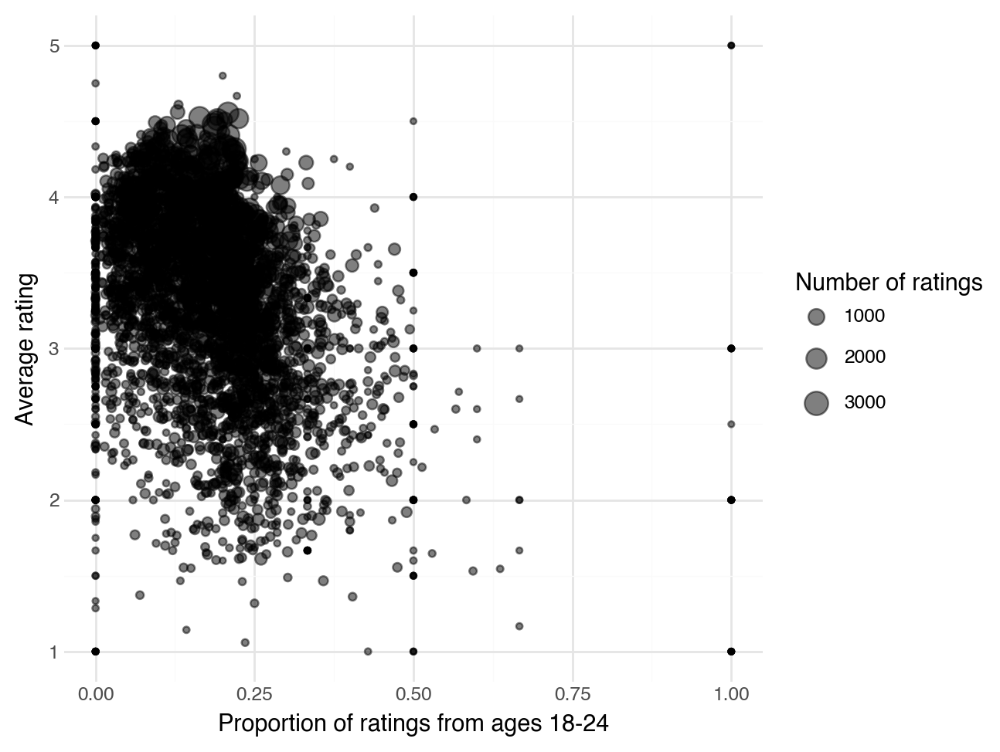

import pandas as pdConcatenating, Joining, and Pivoting Data
There are several ways of answering many questions in this notebook, but try to use the new operations (concatenate, joint/merge, pivot) whenever possible to get practice.
Movie Ratings Data
The Movielens data set (https://dlsun.github.io/pods/data/ml-1m/ ) contains 1 million movie ratings submitted by users. The information about the movies, ratings, and users are stored in three separate files, called movies.dat, ratings.dat, and users.dat. The column names are not included with the data files. Refer to the webpage above for more information.
1. Read in each of the data files.
(Hint: see the note in the documentation about the delimiter; use the sep argument in read_csv. If you get an error when reading the movies.dat file, try encoding_errors = "ignore" in read_csv.)
# YOUR CODE HERE
base = "https://dlsun.github.io/pods/data/ml-1m/"
movies_url = base + "movies.dat"
rating_url = base + "ratings.dat"
users_url = base + "users.dat"
movies_df = pd.read_csv(movies_url,sep = "::",
encoding_errors="ignore",
header = None,
names = ["movies_id", "title", "genre"])
rating_df = pd.read_csv(rating_url,sep = "::",
encoding_errors="ignore",
header = None,
names = ["user_id", "movie_id", "rating", "timestamp"])
user_df = pd.read_csv(users_url,sep = "::",
encoding_errors="ignore",
header = None,
names = ["user_id", "gender", "age", "occupation", "zip"])<positron-console-cell-3>:7: ParserWarning: Falling back to the 'python' engine because the 'c' engine does not support regex separators (separators > 1 char and different from '\s+' are interpreted as regex); you can avoid this warning by specifying engine='python'.
<positron-console-cell-3>:11: ParserWarning: Falling back to the 'python' engine because the 'c' engine does not support regex separators (separators > 1 char and different from '\s+' are interpreted as regex); you can avoid this warning by specifying engine='python'.
<positron-console-cell-3>:15: ParserWarning: Falling back to the 'python' engine because the 'c' engine does not support regex separators (separators > 1 char and different from '\s+' are interpreted as regex); you can avoid this warning by specifying engine='python'.rating_df.head()| user_id | movie_id | rating | timestamp | |
|---|---|---|---|---|
| 0 | 1 | 1193 | 5 | 978300760 |
| 1 | 1 | 661 | 3 | 978302109 |
| 2 | 1 | 914 | 3 | 978301968 |
| 3 | 1 | 3408 | 4 | 978300275 |
| 4 | 1 | 2355 | 5 | 978824291 |
movies_df.head()| movies_id | title | genre | |
|---|---|---|---|
| 0 | 1 | Toy Story (1995) | Animation|Children's|Comedy |
| 1 | 2 | Jumanji (1995) | Adventure|Children's|Fantasy |
| 2 | 3 | Grumpier Old Men (1995) | Comedy|Romance |
| 3 | 4 | Waiting to Exhale (1995) | Comedy|Drama |
| 4 | 5 | Father of the Bride Part II (1995) | Comedy |
user_df.head()| user_id | gender | age | occupation | zip | |
|---|---|---|---|---|---|
| 0 | 1 | F | 1 | 10 | 48067 |
| 1 | 2 | M | 56 | 16 | 70072 |
| 2 | 3 | M | 25 | 15 | 55117 |
| 3 | 4 | M | 45 | 7 | 02460 |
| 4 | 5 | M | 25 | 20 | 55455 |
2. Which age group tends to give the highest ratings? Create an appropriate summary to answer this question.
(Note the way age is coded in the REAMDE file.)
# YOUR CODE HERE
rating_user_df = rating_df.merge(user_df, on="user_id", how='left', validate="many_to_one")
age_label = {1:"<18", 18:"18-24", 25:"25-34", 35:"35-44", 45:"45-49", 50:"50-55", 56:"56+"}
rating_user_df["age_group"] = rating_user_df["age"].map(age_label)(rating_user_df.groupby("age_group")["rating"].agg(n_rating = "size", mean_rating = "mean").sort_values("mean_rating", ascending=False).reset_index())| age_group | n_rating | mean_rating | |
|---|---|---|---|
| 0 | 56+ | 38780 | 3.766632 |
| 1 | 50-55 | 72490 | 3.714512 |
| 2 | 45-49 | 83633 | 3.638062 |
| 3 | 35-44 | 199003 | 3.618162 |
| 4 | <18 | 27211 | 3.549520 |
| 5 | 25-34 | 395556 | 3.545235 |
| 6 | 18-24 | 183536 | 3.507573 |
3. Among movies with at least 100 ratings, which movies had the highest average rating? The lowest?
sum_ratings_df = (rating_df.groupby("movie_id")["rating"].agg(n_rating="size",mean_rating="mean")
.reset_index())
movies_rating_df = sum_ratings_df.merge(movies_df, left_on="movie_id", right_on="movies_id", how="left")
movies_100 = movies_rating_df[movies_rating_df["n_rating"] >= 100]
movies_100.sort_values("mean_rating", ascending=False).head(10)
| movie_id | n_rating | mean_rating | movies_id | title | genre | |
|---|---|---|---|---|---|---|
| 1839 | 2019 | 628 | 4.560510 | 2019 | Seven Samurai (The Magnificent Seven) (Shichin... | Action|Drama |
| 309 | 318 | 2227 | 4.554558 | 318 | Shawshank Redemption, The (1994) | Drama |
| 802 | 858 | 2223 | 4.524966 | 858 | Godfather, The (1972) | Action|Crime|Drama |
| 708 | 745 | 657 | 4.520548 | 745 | Close Shave, A (1995) | Animation|Comedy|Thriller |
| 49 | 50 | 1783 | 4.517106 | 50 | Usual Suspects, The (1995) | Crime|Thriller |
| 513 | 527 | 2304 | 4.510417 | 527 | Schindler's List (1993) | Drama|War |
| 1066 | 1148 | 882 | 4.507937 | 1148 | Wrong Trousers, The (1993) | Animation|Comedy |
| 861 | 922 | 470 | 4.491489 | 922 | Sunset Blvd. (a.k.a. Sunset Boulevard) (1950) | Film-Noir |
| 1108 | 1198 | 2514 | 4.477725 | 1198 | Raiders of the Lost Ark (1981) | Action|Adventure |
| 843 | 904 | 1050 | 4.476190 | 904 | Rear Window (1954) | Mystery|Thriller |
4. For each movie, calculate the average rating and the proportion of the ratings that were from users aged 18-24. Make a scatterplot showing the relationship between the average rating and the 18-24 share, with each point representing a movie. (Optional: Use the size of each point to represent the number of users who rated the movie.)
# YOUR CODE HERE
rating_user_df["is_18_24"] = (rating_user_df["age_group"] == "18-24").astype(int)
movie_age_summary = (rating_user_df.groupby("movie_id").agg(mean_rating=("rating", "mean"),
prop_18_24=("is_18_24", "mean"), n_ratings=("rating", "size"))
.reset_index())
movie_age_summary.head()| movie_id | mean_rating | prop_18_24 | n_ratings | |
|---|---|---|---|---|
| 0 | 1 | 4.146846 | 0.215696 | 2077 |
| 1 | 2 | 3.201141 | 0.219686 | 701 |
| 2 | 3 | 3.016736 | 0.223849 | 478 |
| 3 | 4 | 2.729412 | 0.229412 | 170 |
| 4 | 5 | 3.006757 | 0.219595 | 296 |
from plotnine import *
(ggplot( movie_age_summary,aes(x="prop_18_24", y="mean_rating", size="n_ratings"))
+ geom_point(alpha=0.5)
+ labs( x="Proportion of ratings from ages 18-24", y="Average rating", size="Number of ratings")
+ theme_minimal())
5. Calculate the number of ratings by movie. How many of the movies had zero ratings?
(Hint: Why is an inner join not sufficient here?)
# YOUR CODE HERE
rating_counts = (rating_df.groupby("movie_id").size()
.reset_index(name="n_ratings"))
movie_counts = movies_df.merge(rating_counts, left_on="movies_id", right_on="movie_id", how="left"
)
movie_counts["n_ratings"] = movie_counts["n_ratings"].fillna(0)
movie_counts.head()| movies_id | title | genre | movie_id | n_ratings | |
|---|---|---|---|---|---|
| 0 | 1 | Toy Story (1995) | Animation|Children's|Comedy | 1.0 | 2077.0 |
| 1 | 2 | Jumanji (1995) | Adventure|Children's|Fantasy | 2.0 | 701.0 |
| 2 | 3 | Grumpier Old Men (1995) | Comedy|Romance | 3.0 | 478.0 |
| 3 | 4 | Waiting to Exhale (1995) | Comedy|Drama | 4.0 | 170.0 |
| 4 | 5 | Father of the Bride Part II (1995) | Comedy | 5.0 | 296.0 |
(movie_counts["n_ratings"] == 0).sum()np.int64(177)6. How many movies received both a 1 and a 5 rating? Which movies? How many ratings of each type (1 or 5 stars)? Answer these question by joining two appropriate tables.
# YOUR CODE HERE
one_star = (rating_df[rating_df["rating"] == 1].groupby("movie_id")
.size().reset_index(name="one_star_ratings"))
five_star = (rating_df[rating_df["rating"] == 5].groupby("movie_id")
.size().reset_index(name="five_star_ratings"))
both_ratings = one_star.merge(five_star, on="movie_id", how="inner")
both_ratings = both_ratings.merge(movies_df, left_on="movie_id", right_on="movies_id", how="left")
both_ratings[["title", "one_star_ratings", "five_star_ratings"]]| title | one_star_ratings | five_star_ratings | |
|---|---|---|---|
| 0 | Toy Story (1995) | 16 | 820 |
| 1 | Jumanji (1995) | 42 | 48 |
| 2 | Grumpier Old Men (1995) | 44 | 43 |
| 3 | Waiting to Exhale (1995) | 21 | 6 |
| 4 | Father of the Bride Part II (1995) | 28 | 16 |
| ... | ... | ... | ... |
| 2981 | Meet the Parents (2000) | 35 | 163 |
| 2982 | Requiem for a Dream (2000) | 9 | 132 |
| 2983 | Tigerland (2000) | 2 | 12 |
| 2984 | Two Family House (2000) | 1 | 14 |
| 2985 | Contender, The (2000) | 9 | 83 |
2986 rows × 3 columns
len(both_ratings)2986